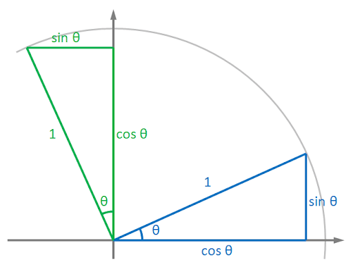
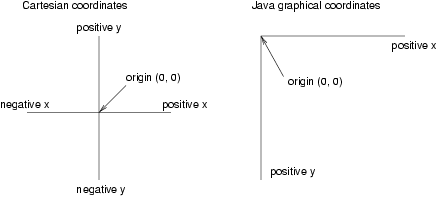

In this post, another basic image operation is explored - Transformation.
This post is split into four sections:
- Mathematical and Computational Principle of Transformations
- Practice with OpenCV in Python
- Build Translation and Rotation Function From Scratch
Principle of Transformation
Mathematics
In general, a transformation of a point \(\mathbf{p}\), \(\begin{pmatrix} v & w \end{pmatrix}\) to another point \(\mathbf{q}\), \(\begin{pmatrix} x & y \end{pmatrix}\) is given by
\[\mathbf{q} = \mathbf{R}\mathbf{p} + \mathbf{T}.\]
Explicitly,
\[
\begin{bmatrix} x \\ y \end{bmatrix} = \begin{bmatrix} \omega_1 & \omega_2 \\ \omega_3 & \omega_4 \end{bmatrix} \begin{bmatrix} v \\ w \end{bmatrix} + \begin{bmatrix} t_1 \\ t_2 \end{bmatrix}.
\]
where the \(\mathbf{R}\) and \(\mathbf{T}\) denote rotation and translation matrices respectively.
To make the expression more compact, we can write it as
\[
\begin{bmatrix} x \\ y \end{bmatrix} = \begin{bmatrix} \omega_1 & \omega_2 & t_1\\ \omega_3 & \omega_4 & t_2 \end{bmatrix} \begin{bmatrix} v \\ w \\ 1 \end{bmatrix}.
\]
A quick method to determine the transformation matrix is to consider the changes of unit vectors \(\hat{i}\) and \(\hat{j}\).
For example, if the \(\mathbf{R}\) is an identity matrix and \(\mathbf{T} = \mathbf{0}\) (i.e. no transformation), then the equation is
\[
\begin{bmatrix} x \\ y \end{bmatrix} = \begin{bmatrix} 1 & 0 \\ 0 & 1 \end{bmatrix} \begin{bmatrix} v \\ w \end{bmatrix}.
\]
Another way to look at this equation is
\[
\begin{bmatrix} x \\ y \end{bmatrix} = v \begin{bmatrix} 1 \\ 0 \end{bmatrix} + w \begin{bmatrix} 0 \\ 1 \end{bmatrix},
\]
which means that \(v\) and \(w\) are values to scale up the unit vectors \(\hat{i}\) and \(\hat{j}\). Therefore, any transformation of the vector \(\begin{bmatrix} v \\ w \end{bmatrix}\) can be regards as the transformation of the entire vector space formed by \(\hat{i}\) and \(\hat{j}\).

Take rotation as an example, if \(\hat{i}\) and \(\hat{j}\) are rotated anti-clockwise by an angle \(\theta\), then \(\hat{i}\) becomes \(\begin{bmatrix} cos(\theta) \\ sin(\theta) \end{bmatrix}\) and \(\hat{j}\) becomes \(\begin{bmatrix} -sin(\theta) \\ cos(\theta) \end{bmatrix}\). Thus, the equation is
\[
\begin{bmatrix} x \\ y \end{bmatrix} = v \begin{bmatrix} cos(\theta) \\ sin(\theta) \end{bmatrix} + w \begin{bmatrix} -sin(\theta) \\ cos(\theta) \end{bmatrix}.
\]
Therefore, in the general equation, we should use the matrix
\[ \begin{bmatrix} \cos(\theta) & -sin(\theta) & 0\\ sin(\theta) & cos(\theta) & 0 \end{bmatrix}. \]
Other transformation matrix can be obtained in the same manner.
Computation
To make the computation easier, square matrix is preferred.
\[
\begin{bmatrix} x \\ y \\ 1\end{bmatrix} = \begin{bmatrix} \omega_1 & \omega_2 & t_1\\ \omega_3 & \omega_4 & t_2 \\ 0 & 0 & 1\end{bmatrix} \begin{bmatrix} v \\ w \\ 1\end{bmatrix},
\]
or if row vectors are used
\[
\begin{bmatrix} x & y & 1\end{bmatrix} = \begin{bmatrix} v & w & 1\end{bmatrix} \begin{bmatrix} \omega_1 & \omega_3 & 0\\ \omega_2 & \omega_4 & 0 \\ t_1 & t_2 & 1\end{bmatrix}.
\]
The matrix should be obtained using the same manner discussed in last section.
One issue to consider when processing images in computer is that the origin of the image does not locate at the centre of the image, but at the top left-hand side. It works for translation and resizing. But converting to Cartesian coordinates is necessary before rotation or shearing.

Therefore, rotation or shearing requires three steps:
- Convert from image coordinates to Cartesian coordinates
- Perform rotation or shearing
- Convert the results back to image coordinates
It is not hard to realise that for a \((M \times N)\) matrix, the origin of the image space locates at \(-\frac{N}{2}, \frac{M}{2}\). Thus, the transformation can be calculated from
\[
\begin{bmatrix} x & y & 1\end{bmatrix} = \begin{bmatrix} v & w & 1 \end{bmatrix} \begin{bmatrix} 1 & 0 & 0 \\ 0 & -1 & 0 \\ -0.5N & 0.5M & 1 \end{bmatrix} \begin{bmatrix} \mathbf{R}^T & \mathbf{0} \\ \mathbf{T}^T & 1 \end{bmatrix} \begin{bmatrix} 1 & 0 & 0 \\ 0 & -1 & 0 \\ 0.5N & 0.5M & 1 \end{bmatrix}.
\]
Acknowledgement
The creation of this post is inspired by Datawhale.
Reference
本博客所有文章除特别声明外，均采用 CC BY-SA 3.0协议 。转载请注明出处！